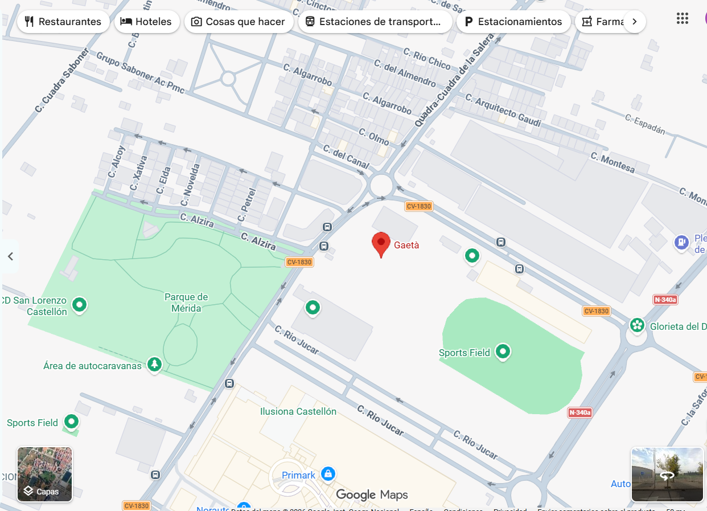

Estamos para ayudarte
Ubicación e instalaciones
Ven a visitarnos a nuestras instalaciones principales o ponte en contacto con nuestra secretaría deportiva para cualquier duda.
Dirección de la escuela
Campo Municipal de Fútbol Caciques F.C.
Avenida del Deporte, s/n
46000 - Ciudad Deportiva
Teléfono de secretaría: +34 900 123 456
Correo electrónico: contacto@caciquesfc.es
